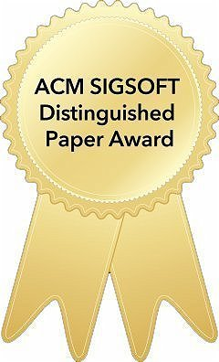

Biography
- I am currently a Full Professor in the school of Cyber Science and Engineering of Huazhong University of Science and Technology (HUST), where I lead the ARTS3 research group (in short for Advanced Research for Trustworthy and Secure Software Systems). I obtained my PhD degree from the Hong Kong University of Science and Technology (HKUST), and my bachelor degree from Zhejiang University. During my PhD studies, I was honored and fortunate to be supervised by Prof. Shing-Chi CHEUNG in the CASTLE group. I also had an unforgettable visiting experience at UC, Davis under the supervision of Prof. Zhendong Su. My research interests mainly focus on LLM/Agents Security, Software/System Security, and LLM/Agents for Software Systems.
招收2027级博士生X名（含联培卓越工程师计划）
招收2027级硕士生4名
招收博士后、实习生，欢迎联系（请附简历）
研究方向：大模型/智能体安全、系统软件安全、AI交叉方向
招收2027级硕士生4名
招收博士后、实习生，欢迎联系（请附简历）
研究方向：大模型/智能体安全、系统软件安全、AI交叉方向
Working Experience
-
Huazhong University of Science and Technology Mar, 2026 - Now
Professor, School of Cyber Science and Engineering -
Huazhong University of Science and Technology Dec, 2019 - Feb, 2026
Associate Professor, School of Cyber Science and Engineering -
The Hong Kong University of Science and Technology Apr, 2019 - Nov, 2019
PostDoc Research Fellow, supervised by Prof. Shing-Chi CHEUNG -
The University of California, Davis Jun, 2017 - Feb, 2018
Visiting Scholar, supervised by Prof. Zhendong Su
News
- [2026.07] One paper was accepted to CCS 2026 CCS'2026, Congratulations to Zongze!
- [2026.07] One paper was accepted to SOSP 2026 SOSP'2026, Congratulations to Xin Lai!
- [2026.07] Two papers were accepted to ISSTA 2026 ISSTA'2026, Congratulations to Zeliang!
- [2026.07] Two papers were accepted to ASE 2026 ASE'2026, Congratulations to Haoyu!
- [2025.10] Our paper working on JVM Compiler Testing ICSE'2026, Congratulations to Shiyu!
- [2025.09] Our paper working on Static Detection Rule Refinement ASE'2025, Congratulations to Zongze!
- [2025.05] Our paper working on Java Security was accepted to USENIX Security'2025, Congratulations to Yiheng!
- [2025.06] Our paper working on LLM benchmark was accepted to ACL'2025, Congratulations to Jialun!
- [2025.04] Three papers were acceted to FSE'2025, Congratulations to Xiaohu!
- [2024.12] One paper was acceted to AAAI'2025, Congratulations to Xiaohu!
- [2024.08] Four paper were acceted to ASE'2024, Congratulations to Zongze, Zifan and Yulun!
- [2024.07] Our paper working on Program Repair with LLM was accepted to ISSTA'2024, Congratulations to Bo Lin!
- [2024.07] Our paper working on NPM Malware Detection was accepted to ISSTA'2024, Congratulations to Zeliang!
- [2024.06] Our paper working on JIT Testing was accepted to ASPLOS'2024, Congratulations to Zifan!
- [2024.05] Congrats to Xiaohu's paper on LLM-based Vulnerability Detection was accepted to ACL'2024 Findings!
Selected Publications
- Software/System Security
- Validating Rust Compilers with Trait-Type Constraint Graph, SOSP 2026.
- Fuzzing Java Optimizing Compilers with Complex Inter-Class Structures Guided by Heterogeneous Program Graphs, ICSE 2026.
- Precise and Effective Gadget Chain Mining through Deserialization Guided Call Graph Construction, USENIX Security 2025.
- Validating JVM Compilers via Maximizing Optimization Interactions, ASPLOS 2024.
- Detecting JVM JIT Compiler Bugs via Exploring Two-Dimensional Input Spaces, ICSE 2023.
- Validating SMT Solvers via Skeleton Enumeration Empowered by Historical Bug-Triggering Inputs, ICSE 2023.
- PatchPorter: LLM-Driven Security Patch Porting via Version Tracing and Context Selection for NPM, ISSTA 2026.
- From Function to Repository: Towards Understanding and an Agentic Approach for Repo-Level Directed Input Generation, ASE 2026.
- Effective Vulnerable Function Identification based on CVE Description Empowered by Large Language Models, ASE 2024.
- Maltracker: A Fine-Grained NPM Malware Tracker Copiloted by LLM-Enhanced Dataset, ISSTA 2024.

Towards Understanding the Effectiveness of Large Language Models on Directed Test Input Generation, ASE 2024.
Awards
- Won the ACM SIGSOFT Distinguished Paper Award, ASE 2024 (*2)
- Won the ACM SIGSOFT Distinguished Paper Award, ISSTA 2024
- Awarded as “华中学者”卓越青年学者, 2024
- Awarded as “武汉东湖学者”, 2024
- Awarded as the ACM Wuhan Rising Star (ACM武汉“新星奖”), 2023
- Awarded as “优秀指导教师”, 全国大学生信息安全竞赛-作品赛全国一等奖, 2022
- Awarded as Young Elite Scientist Sponsorship Program, China Association for Science and Technology, 2021-2023
- Postgraduate Studentship, CSE HKUST, Annually (September 2014-March 2019).
- Top Research Post-Graduate Award, SENG HKUST, July 2018.
- School of Engineering (SENG) PhD Fellowship Award, SENG HKUST, 2014-2015.
Recruiting
-
You are warmly welcomed to join our team and work with us to conduct Advanced Research for Trustworthy and Secure Software Systems. I am always recruiting self-motivated Undergraduate/Master/PhD/PostDoc students with strong programming skills and good English ability. Please send me an email with your CV if you are interested to work with me.
I am also seeking for all kinds of collaborations, drop me an email if you are interested. If you want to know more about me, please see this post (in Chinese).